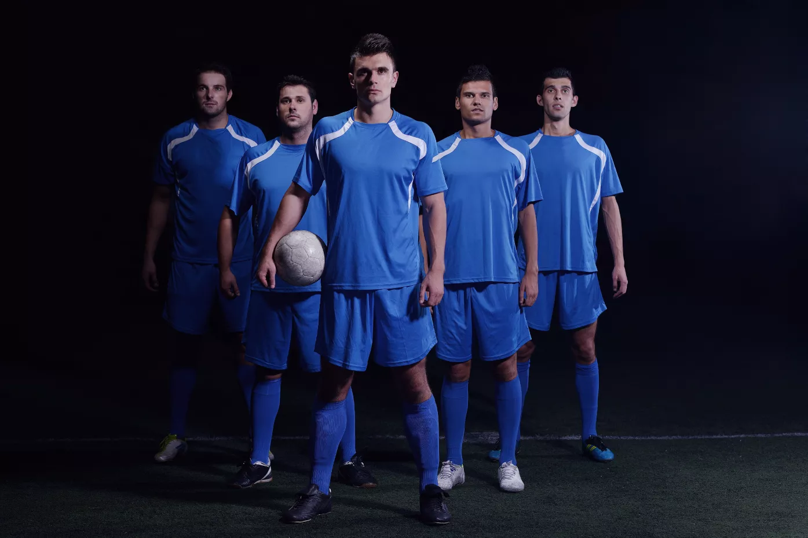

<section class="about__lions__container">
    <div class="about__lions__wrapper">
        <div class="about__lions__img__container">
            
        </div>
        <div class="about__lions__article__wrapper">
        <article class="about__lions__article">
            <h1 class="about__lions__h1">About Lions FC</h1>
            <div class="about__lions__hr"></div>
            <p class="about__lions__p">The history of our football club begins at the end of 2010 when a small group of graduates from New York's University made up their minds to continue their passion for playing football. Together they established a club Goldsmiths Athletic FC.</p>
            <p class="about__lions__p">The history of our football club begins at the end of 2010 when a small group of graduates from New York's University made up their minds to continue their passion for playing football. Together they established a club Goldsmiths Athletic FC.</p>
        </article>
        <div class="about__lions__button__wrapper about__lions__button__joint">
            <a class="about__lions__button about__lions__button__joint" type="button" href="#">Learn more</a>
        </div>
    </div>
    </div>
</section>